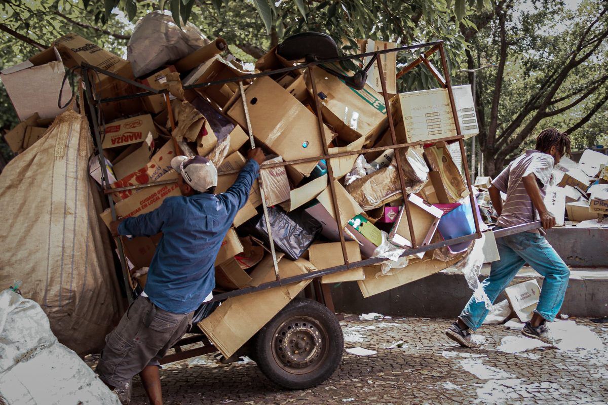

Compartilhe:


Escrito por Adrian Rubens, Ellen Borges, Gustavo Braz, Maria Eduarda, Maria Mariana, Natielle Ferreira e Rian Victor
Publicado em 19 de junho de 2023 | 18:00
Catadores autônomos do grupo Maladeza, recolhem lixo em Belo Horizonte: carroças são decisivas para melhora na renda (Foto: Julia Nagle / Pimp My Carroça)
Fonte: https://projetocolabora.com.br/ods6/catadores-enfrentam-preconceito-miseria-inseguranca/
Compartilhe:
Em “Quarto de Despejo: Diário de Uma Favelada” de autoria de Carolina Maria de Jesus, editada pelo jornalista Audálio Dantas, que alterou minimamente para prover uma melhor compreensão do texto, é retratado um diário que contém o cotidiano da autora na favela do Canindé onde vivia e sustentava, sozinha, seus três filhos por meio da venda de papéis que recolhia nas ruas. Os papéis, aliás, eram objetos recorrentes, já que mesmo não dominando a norma padrão de linguagem, possuía um dom especial ao relatar sua vida por mais de cinco mil páginas que originaram em suas obras.
O trabalho baseado em catar materiais para reciclagem seria uma atividade excelente no mundo se o motivo de ela ser tão pertinente no século atual não fosse o aspecto econômico a que são submetidos os catadores, os quais são obrigados devido ao aumento de desemprego, não possuir escolaridade suficiente para ingresso em outros ramos, etc. No entanto, um estigma social e racial marginaliza essa parte de trabalhadores a partir da falsa relação moralista de que aquilo que foi rejeitado, o lixo, não tem uso ou significância, e de forma similar, é atribuído às pessoas que trabalham nesse ramo, a mesma insignificância. Junto dessa necessidade de subsistência e o passado punitivo do Brasil, dados de pesquisa do Instituto de Pesquisa Econômica Aplicada (IPEA), no Censo 2010, confirmam a situação ao revelar que 66,1%, ou seja, quase ⅔ dos catadores de materiais recicláveis do Brasil se declararam negros ou pardos.
Todos os grupos sociais merecem seus devidos direitos, reconhecimento e suporte, afinal, o passado da compositora confirma que nem com o mito da ascensão social negra, é possível se libertar da opressão. Carolina Maria de Jesus não usufruiu de seus direitos de escritora e revolucionária renomada, morreu isolada, em condições um pouco melhores que já tinha. Casos como estes expõem, dentro do contexto racial, o destino atrelado aos que nasceram na pobreza e dela, se iludiram a sair. Quem permite é a maioria, mas em casos assim, a opressão.
Catadora de materias recicláveis
Fonte:https://www.frankesustentabilidade.com.br/search?updated-max=2022-01-31T10:13:00-03:00&max-results=20&reverse-paginate=true&m=0
No livro de Carolina, é descrito as condições sob as quais ela passava, vivendo em um ambiente sem saneamento básico e buscando por restos de alimentos no lixo, por não ter um emprego e consequentemente uma fonte de renda para viver em um local melhor. As condições em que os catadores realizam o trabalho muitas vezes são precárias e insalubres, sem a utilização de materiais de proteção adequados, como luvas e máscaras, colocando a saúde em risco devido à exposição a materiais e resíduos perigosos. Em seu relato, Carolina corria risco de sofrer cortes e ferimentos, e não havia nenhum suporte ou proteção adequada.
Catador de papel em Friburgo (Foto: Henrique Pinheiro)
Fonte:https://avozdaserra.com.br/noticias/nova-friburgo-recicla-apenas-011-do-lixo-que-coleta
Carolina Maria de Jesus, em “Quarto de Despejo”, descreve seu árduo trabalho como catadora de papel. É um trabalho que gera pouco lucro, extremamente cansativo e, além disso, perigoso, principalmente no que se refere aos riscos à saúde. Na obra, assim como na realidade, a autora, e catadores de papel/materiais recicláveis são expostos constantemente a resíduos contaminados e poeiras, por exemplo, que podem causar problemas respiratórios ou agravamentos que levam à morte. Aliado a isso, Carolina tinha de cuidar de seus filhos, o que a levava, muitas vezes, a negligenciar cuidados com a saúde, o que também é considerado um risco.
Ainda no contexto do livro, nota-se que a autora pouco comenta sobre sua saúde e é possível traçar um paralelo dessa situação com o seu trabalho. Isso porque, ao trabalhar como catadora de papéis e recicláveis, com pouca renda, como citado, e estar sujeita a condições precárias de sobrevivência, é inviável a procura por algum centro médico, acesso a alimentos e, principalmente, a um sistema de saúde e acompanhamento de qualidade. Em “Quarto de Despejo”, a fome levou Carolina a sofrer com desmaios: “A tontura da fome é pior que a do álcool. A tontura do álcool nos impede de cantar. Mas a da fome nos faz tremer. Percebi que é horrível ter só ar dentro do estômago. (…) E fritei o ovo para ver se parava as náuseas. Parou. Percebi que era fraqueza. O médico mandou-me comer óleo, mas eu não posso comprar, (…). Já que a barriga não fica vazia, tentei viver com ar. Comecei a desmaiar. Então eu resolvi trabalhar porque eu não quero desistir da vida”.
Por fim, é válido ressaltar a principal relação dessa questão, a saúde, com a vida de Carolina Maria de Jesus: a falta que causou a sua morte. Sabe-se que a escritora faleceu em 1977 por ser vítima de uma crise de insuficiência respiratória, devido à asma, uma doença que possuía desde o seu nascimento e, como visto no livro, não há registros de que foi possível realizar, de alguma forma, um acompanhamento médico ideal de sua situação, o que agravou, provavelmente, tal quadro e levou a óbito.
Catador de materiais recicláveis no lixão
Fonte:https://mobilizadores.org.br/noticias/unb-discute-inclusao-social-de-catadores-de-material-reciclavel/
A vulnerabilidade do mercado de recicláveis no Brasil reflete desafios econômicos, sociais e ambientais, com a resiliência do setor dependendo da instabilidade global dos preços das commodities, da falta de infraestrutura e de lacunas na conscientização ambiental. A interdependência com as exportações nacionalmente exige constante adaptação às políticas de importação de outras nações, evidenciando a necessidade não apenas de estratégias empresariais ágeis, mas também de políticas governamentais sustentáveis.
“Quarto de Despejo”, ao retratar vividamente a dura realidade das favelas brasileiras, destaca a escassez de recursos para aqueles dependentes do mercado informal de recicláveis. A protagonista, Carolina, detalha a luta diária pela sobrevivência, onde o descarte negligente de resíduos é inevitável, evidenciando não apenas a vulnerabilidade econômica, mas também a desconexão entre as políticas de gestão de resíduos e as comunidades marginalizadas. Considerar essas nuances desafia a abordar as oscilações do mercado de recicláveis e a implementar estratégias holísticas que atinjam as raízes das disparidades sociais e ambientais presentes na narrativa de Carolina Maria de Jesus.
Catador de entulho sobre o Viaduto 9 de Julho (centro paulistano).
Fonte: Gladstone Barreto - Fonte: https://www.flickr.com/photos/saopaulourgente/3724007770
A reciclagem é uma prática que também é imprescindível para a preservação do meio ambiente, e como citado anteriormente por fornecer renda aos catadores que permanecem sendo negligenciados na sociedade atual; ainda que “Quarto de Despejo” tenha sido escrito há 68 anos, o trabalho fundamental para todo mundo é invisibilizado e feito de chacota por outros.
A partir do contexto retratado aqui, em nosso jornal, foi realizado uma entrevista exclusiva com a atendente do centro de coleta de resíduos MG RECICLA, Sabrina Taís, que dissertou sobre sua experiência e avanços enfrentados no cenário da reciclagem. Sendo assim, foram feitas perguntas direcionadas a ela e sua relação com a reciclagem e, a primeira delas, se refere ao motivo de ela acreditar que é tão necessário reciclar. Assim, como resposta, Sabrina afirmou que “os equipamentos elétricos e eletrônicos possuem diversos componentes tóxicos em suas estruturas. Se descartados de maneira incorreta, esses resíduos podem contaminar o solo e os lençóis freáticos, colocando em risco nossa saúde, a decomposição não é hoje, é com o tempo, as crianças que estão por vim que irão sofrer, com más atitudes talvez de avós, pais, parentes ou até mesmo de desconhecidos.” Em outro momento, foi questionado se ela havia contato com outros catadores e, se não, o motivo de não haver tal contato. Ela afirma: “Não temos contato com catadores por sermos uma empresa privada. Realizamos coletas em residências e empresas, precisamos emitir um laudo de destinação através da plataforma do governo FEAM, para comprovação de coletas seguras e de boa procedência.” Por fim, com informações disponibilizadas sobre a MG Recicla, sabe-se que, no local, não há recolhimento de vidro, papelão, entre outros materiais e, por isso, foi perguntado sobre quais são os conselhos sobre o descarte correto desses materiais que ela poderia citar e por que existem poucos centros que recolhem tais materiais. Sabrina afirma que “hoje a MG Recicla é especializada com coletas de resíduos eletrônicos e eletroeletrônicos, os materiais não pertencentes a esse grupo, nós tarifamos a coleta, por nos gerar um custo para o descarte correto dos mesmo.”
A partir dos relatos de Carolina Maria de Jesus em “Quarto de Despejo” e das reflexões sobre a realidade dos catadores de materiais recicláveis no Brasil, podemos concluir que a questão vai além da mera coleta de resíduos. Ela expõe as profundas desigualdades sociais, econômicas e raciais presentes na sociedade brasileira.
A narrativa de Carolina Maria de Jesus destaca a precariedade das condições de vida nas favelas, onde a busca por sustento muitas vezes leva as pessoas a trabalhos extremamente desgastantes e perigosos, como a coleta de materiais recicláveis. As condições de trabalho descritas no livro revelam não apenas a falta de oportunidades econômicas, mas também a ausência de políticas públicas eficientes para lidar com a pobreza e a exclusão social.
Portanto, os relatos de Carolina Maria de Jesus em seu livro e as reflexões sobre os catadores de materiais recicláveis no Brasil apontam para uma problemática que transcende a simples coleta de resíduos. Essa realidade evidencia as profundas desigualdades sociais, econômicas e raciais que permeiam a sociedade brasileira.
Catador há mais de 20 anos, Luciano Coelho encontra na reciclagem uma alternativa para o desemprego, Foto: Vilma Ribeiro
Fonte: https://www.vozdascomunidades.com.br/favelas/com-trabalho-de-reciclagem-morador-do-alemao-e-exemplo-para-a-comunidade/